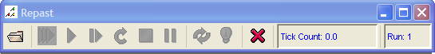
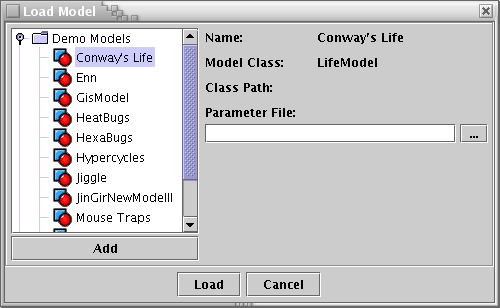

java -jar c:\repast\lib\repast.jar
will start Repast on windows assuming Repast is installed in c:\. On Linux and other OSs replace c:\ with wherever Repast has been installed. When Repast starts you will see

Clicking on the folder button will display a dialog for loading a simulation model into Repast.

The tree on the left side of the dialog contains all the demonstration models that are distributed with Repast together with any simulation models that are contained in the repast\models directory. To load a model into Repast click on the appropriate node in the tree and then on the load button.
To add new models to the tree so that you can load them, click on the add button. You can then use the file dialog to find the jar or .class file that you want to load. In addition you can also add jar or class files to the repast/models directory. Note that in order for a .class file to be properly loaded it must be in the directory appropriate to its package. For example, if we wanted to add uchicago.src.sim.heatBugs.HeatBugsModel class (the heat bugs demo model) to the tree, HeatBugsModel.class must be in the uchicago\src\sim\heatBugs directory. This requirement applies to .class files added to the models directory and via the add button. If you have a parameter file that you want to load with a model, you can enter its location in the parameter file text box or seach for it using the "..." button. Once the model has been loaded, it can be run via the toolbar. See How to use the Gui for more information about using the gui.
In order to run Repast, regardeless of the "main" class, the Java virtual machine needs to know the location of the core Repast library - repast.jar. (Repast uses many other libraries as well but repast.jar itself knows how to find these.) The repast.jar is in the the repast\lib directory of the repast distribution. You tell the Java virtual machine where any required library is located by the including it in the classpath. So when starting a Repast simulation you include the repast.jar in the classpath in the standard java manner by using the -cp switch. For example, Repast can be started from the command line as follows (all on one line):
java -jar c:\repast\lib\repast.jar
This assumes a windows machine and that repast is installed in c:\. Note that I've used "\" here as separators. On windows you could also use "/". On Unix the ";" would be replaced by ":", and 'c:/repast' with wherever repast was installed (e.g. /usr/local/repast).
Repast loads models from the command line via the SimInit class, and you pass the name of a class as an argument. While this sounds complicated the actual command has the generic form of:
java -cp path_to_your_model;c:/repast/lib/repast.jar uchicago.src.sim.engine.SimInit fullyQualifiedModelName
For example to run the Heat Bugs example, the command (all on one line) is as follows
java -cp c:/repast/demo/bugs/bugs.jar;c:/repast/lib/repast.jar uchicago.src.sim.engine.SimInit uchicago.src.sim.heatBugs.HeatBugsModel
If your model is in a jar file (as in example above), the path to your model should be the path to this jar file. If your model is not in a jar file, then you must provide the path to the directory in which you model resides. If your model is part of package, as it should be, this directory will be the top directory of your package. This is standard Java behavior and more details can be found in any good Java book. Note that you can also make your jar files themselves executable so that your model can be run as follows:
java -jar my_model.jar.See the FAQ for more information on how to make your jar files executable..
You can also specify an optional parameter file that will set the default parameters for your model. The path to the parameter file should follow the fully qualified name of your model. For example (all on one line):
java -cp c:/repast/demo/bugs/bugs.jar;c:/repast/lib/repast.jar uchicago.src.sim.engine.SimInit uchicago.src.sim.heatBugs.HeatBugsModel c:\params\bugs.pf
where bugs.pf is the parameter file name. See How to use Parameters and Parameter Files for more on using parameters and parameter files.
A simulation can also be run in batch mode free of user intervention by specifying the "-b" switch after SimInit and with a required parameter file as the final argument. The generic command has the form
java -cp path_to_your_model;c:/repast/lib/repast.jar uchicago.src.sim.engine.SimInit -b fullyQualifiedBatchModelName parameter_file
java -cp c:/repast/demo/bugs/bugs.jar;c:/repast/lib/repast.jar uchicago.src.sim.engine.SimInit uchicago.src.sim.heatBugs.HeatBugsBatchModel heatBugsParameters.txt
You can also specify a number in place of the parameter file, specifying how many batch runs you wish to perform. Note that this in this case, any parameter manipulation is all done within the model itself.
java -cp path_to_your_model;c:/repast/lib/repast.jar uchicago.src.sim.engine.SimInit -b fullyQualifiedBatchModelName number > 0
java -cp c:/repast/demo/bugs/bugs.jar;c:/repast/lib/repast.jar uchicago.src.sim.engine.SimInit uchicago.src.sim.heatBugs.HeatBugsBatchModel 3
Note that if do not specify a parameter file or a number, a single batch run will be executed.
If you start Repast via SimInit and do not specify a model, Repast will run in gui mode without a model loaded. You can then load a model by clicking on the folder icon on the Repast toolbar. A dialog box will then be displayed prompting you for your model's classpath and the fully qualified name of your model.
SimInit also accepts two additional switches: